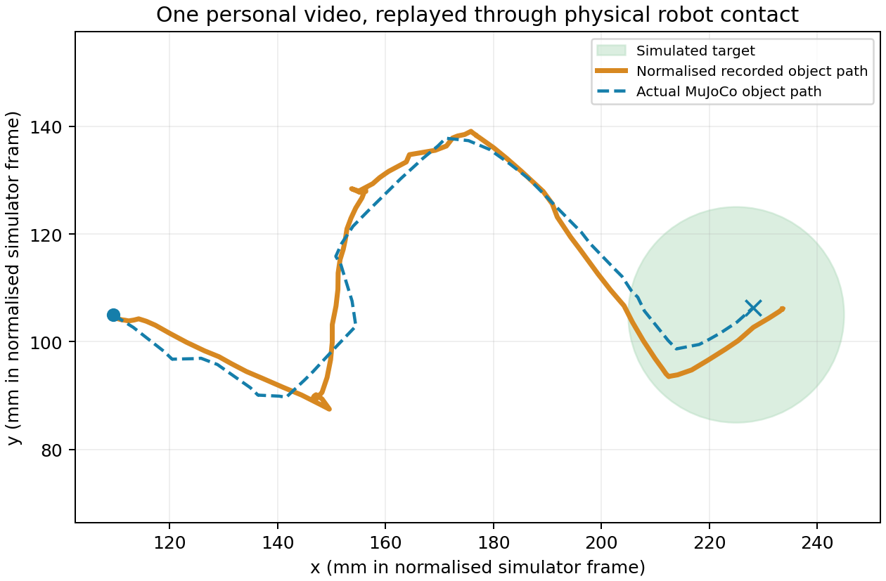

Source: IMG_5670.mov, supplied by the user. Recorded motion drives a physical MuJoCo pushing arm.
Left: the supplied recording. Right: the robot following its retargeted object path. The views align path progress; recording and simulation clocks differ.
The drawn black circle anchors position and scale. Its image radius maps to a chosen 20 mm simulator radius; real physical dimensions were not measured. A hand-coded controller follows the recorded waypoints and uses the demonstrated finger side for aligned contact proposals. This run did not train a policy or world model.

This is one demonstration, with ground-truth simulator observations. It establishes a working data-to-robot connection; it does not establish learned-policy performance, a success rate or generalisation.
Full metrics and limitations · Marker and target-circle tracking · Robot video